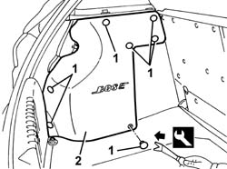
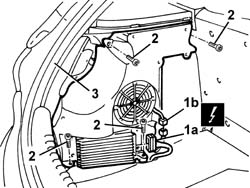
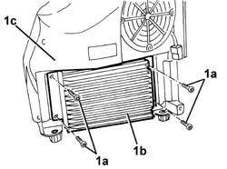

5580T30 Bose sound system' SUBWOOFER - R.R.
- Path
- Procedures > 55 ELECTRICAL EQUIPMENT > 5580 SPECIAL ACCESSORIES > 5580T bose sound system > 5580T30 Bose sound system' SUBWOOFER - R.R.
- Kind
- repair procedure (removal / refitting; the operation number is the code)
- Applies to
- all engines; all production periods
- Interactive page
- https://sloeber94.github.io/elrnDB-a147/en/#/3025631
Applies to: all engines; all production periods
 Removing
Removing
 Refitting
RefittingWork with caution
Open the tailgate.
Remove the rear parcel shelf.
1. Release the retaining buttons using the special tool.
 | Name | Country |
|---|---|---|
1 | Scraper blade | 1.823.015.000 |
2. Remove the protection.

Applies to: all engines; all production periods
Lower the left rear seat backrest.
1. Disconnect electrical connections (1a), (1b).
 | Name | Connector |
|---|---|---|
1a | Bose radio amplifier |
| Name | Connector |
|---|---|---|
1b | Rear subwoofer speaker |
2. Unscrew the bolts
3. Remove the subwoofer.

Applies to: all engines; all production periods
1. If necessary, undo the bolts (1a) and separate the amplifier (1b) from the subwoofer (1c).

Applies to: all engines; all production periods
Refitting
RemovingCheck that the subwoofer is not damaged.
If removed, position the amplifier and fix it using the bolts.
Position the subwoofer and fix it using the bolts.
Connect the electrical connection.
Lift up the left rear seat backrest.
Position the protection and fix it with the retaining studs.
Position the parcel rack
Test the radio to ensure it is working properly.
Topics linked from this page (2)
Topics that link to this page (6)
- 3340A34 rpm sensor (one) of one l/h or r/h rear wheel - r+r
- 3340A35 left rear wheel rpm sensor - r r
- 3340A37 right rear wheel rpm sensor - r r
- 5540A50 tail-light bulb (one), lh or rh - replace
- 5540A56 dipped/main beam electrical wiring - check component operation, line continuity and repair contacts - includes relay replacement if necessary
- 7040B06 side trim (one) lh or rh, load compartment/load platform - r r